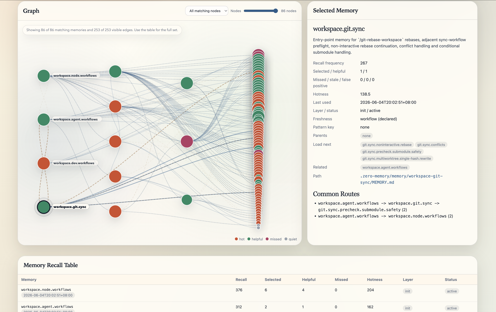
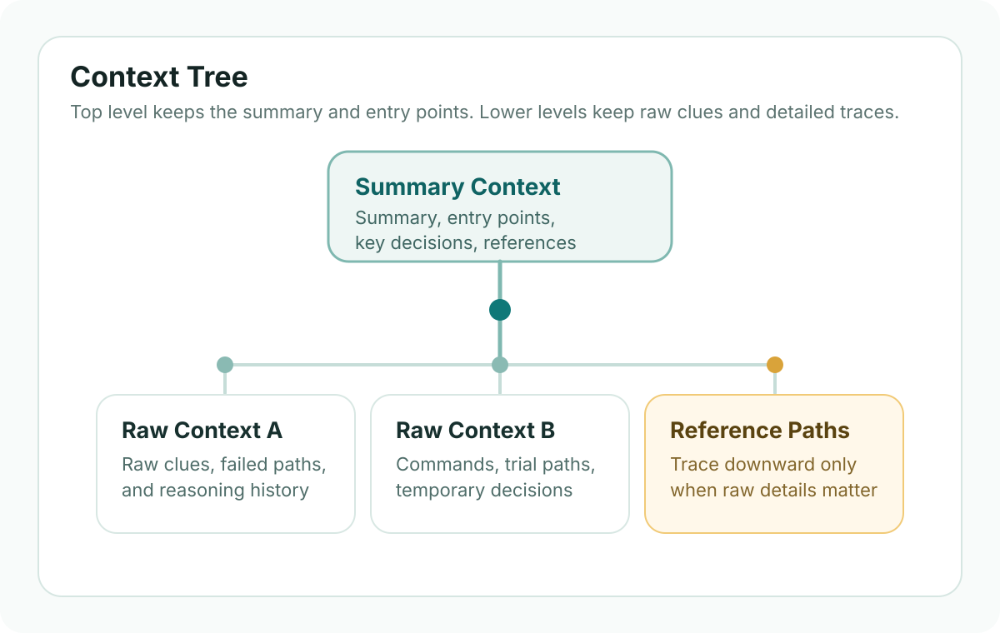
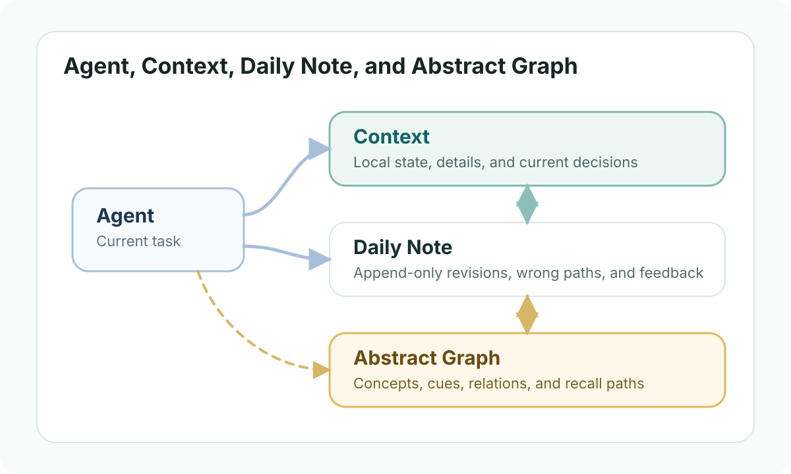
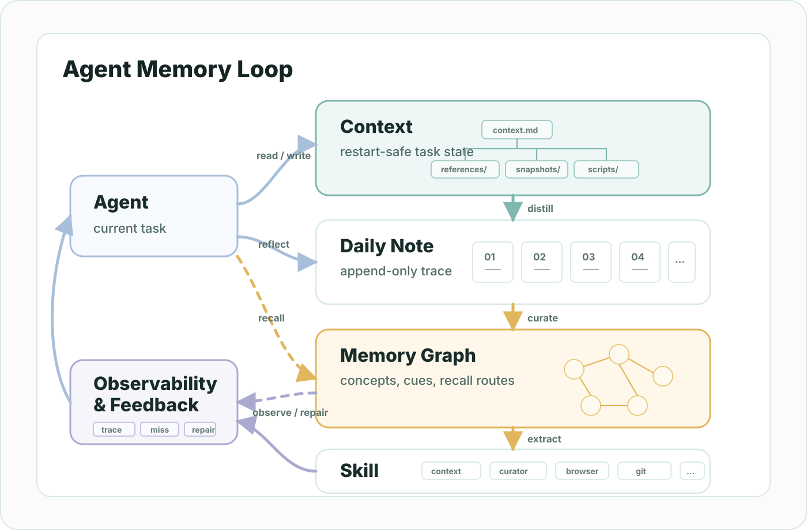

如何实现一个简易的 Agent Memory
本文更侧重记录在使用 Codex / Claude 等 coding Agent 做研发时如何从自己对 context 和 long-term memory 跨 Agent 迁移的需求出发逐步在 skill 的基础之上实现一套独立 Agent memory 的思考和理解。因此这里不会重点展开 memory benchmark 等测试，也没有业界方案调研或对比之类的，更多的是在实践过程中发现不好的地方就随时调整，使得自身的长期经验可以在使用 Agent 的过程中在 memory 的基础上被持续积累并达到自我进化的目的。
本文会讲述如何从0开始自制一个0依赖、本地化的 Agent memory，使其具备如下能力。
- 让同一套 context / memory 可以在不同的 coding Agent 之间复用，比如 Codex 或 Claude。
- 让这套 memory 在用户与 coding Agent 交互的过程中实时、自动地被提炼、召回、修正，并逐步自我进化，而无需用户在每轮对话中主动干预。
- 通过 memory 来路由应该使用哪个 skill，并支持在自我进化过程中将稳定的 workflow 自动转化为新的 skill，或修正已有的 skill。
- 支持 memory 本地化存储，并提供可视化能力，方便理解、审计和维护整个 memory 结构。

项目地址 zero-chaoslab/zero-agent-memory
背景
在早期阶段使用 Agent 处理复杂任务的时候，主要也是使用 plan mode，进一步也会用类似 OpenSpec 这样的 Task Framework 把任务拆开并文档化。对于同类连续任务，这种方式已经很好，因为它能先把目标、步骤和约束整理清楚，再让 Agent 开始执行，并且借助这种文档化的方式，也一定程度上达到了跨 Agent 基于文档开发的目的。但随着不同任务的迭代，问题就变了。我不只是希望 Agent 把当前任务做完，也希望下一次遇到相似问题时，它能复用之前任务里已经得到的经验。但现实里却常常不是这样，旧任务虽然存在，却散落在不同的文档中，经验却很难被自然提取出来。历史被保存了，但“可复用的记忆”并没有真正形成。各个 Agent 虽然有自己的 memory 能力，但是跨 Agent 难以直接复用，并且 memory 的写入和召回过程对自己来说也完全是黑盒。因此开始有了自制一个独立的、可以在不同的 coding Agent 上使用，并方便观测、调试、修改的 context + memory 机制的想法。
原理
从一个 context.md 开始
最开始的想法其实很简单: 做一个
context.md，让 Agent
在执行过程中持续把重要信息记录进去。这样做至少先解决一个很现实的问题: 当 Agent
因为重启、切换环境或者上下文中断而停下来时，它还能重新读回这个文件，接着往下做，而不是每次都从头恢复现场。
这相当于自制了一个简易的 plan mode。
这个阶段的目标不是“构建完整记忆系统”，而只是先确保任务可以连续。也就是说，它更像一种 task continuation 机制，而不是严格意义上的长期记忆。
context 会越写越大
但随着任务一个接一个发生，context.md
会越来越大。它会同时包含目标、过程、试错、命令、临时判断，以及最后真正有价值的结论。等它大到一定程度时，Agent
虽然“有记录”，但已经很难把注意力稳定放在真正重要的地方。
所以自然会想到 compaction: 把 context 压缩成总结，只保留当前还重要的结论，把细节先折叠起来。这解决了注意力问题，却又带来另一个问题: 压缩之后，某些原始线索可能会丢。很多时候，真正关键的不是最后一句总结，而是当时为什么这样判断、排除了什么、哪个失败路径其实以后还会再遇到。
压缩版和原始版都要保留
于是一个更稳妥的方法出现了: 不要让 compaction 覆盖原始内容，而是保留原始 context，再生成压缩后的 summary context，并且在 summary 里保留对原始内容的引用。这样 Agent 平时先看总结，只有当它判断某段原始线索还值得追溯时，才继续往下找。
到这里，context 就不再是一张平铺的长文档，而更像一棵树: 顶层保留摘要和入口，下面挂着更具体的层级和原始材料。Agent 可以按层往下找，而不需要每次都从最底层的所有细节开始读。

但树形 context 还不等于 memory
但问题还没有结束。即使 context 已经有了树状结构，它本质上仍然主要服务于“这个任务怎么继续做下去”。而当前这个任务的 context 也没有必要保存其他任务之间的引用关系。那么问题就来了: 当我们在需要的时候，想有效地召回其他 task 的信息时，应该怎么办？
而我们真正想要的，其实还有另一类东西: 那些能够跨任务复用的经验，比如某种调试模式、某个工作流约束、或者一条已经被验证过的判断规则。
这时如果把所有内容都继续堆进 context tree 里，树本身又会变成另一种日志。它能保存很多东西，但很难回答一个更关键的问题: 这些内容里，哪些只是某次任务的现场，哪些已经值得被提炼成以后也能拿来用的 memory?
回想一下人类自己的思维方式，其实我们也不是把所有细节直接背下来。比如我自己在使用很多 Linux 命令的时候，经常记不住具体参数，但面对问题时，我通常能先推理出“可能该看哪个命令”，然后再去查 man 手册或者 Google 一下，把它“回忆”起来。也就是说，我记住的往往不是命令的使用细节，而是如何找到这些细节的抽象线索、关键字和访问路径。
所以我们真正需要的，可能是一层 Abstract Graph
真正的问题不只是把内容分层保存，而是不同 context 之间往往会出现公共的内容。有些内容值得被单独提炼出来，有些内容彼此之间本来就存在引用关系。换句话说，我们需要的可能不是更多平铺的文档，而是一层图结构的知识图谱。
放到 Agent memory 里看，context
更像是原始信息层，而在它之上我们还需要一层
Abstract Graph。当 Agent
面对一个新的私有领域问题时，它会先通过 graph
进行推理，根据当前的问题决定 graph
的访问路径，最终再按需要回到对应的 context
片段查看原始信息。这样真正负责“召回”的，不再只是 context
本身，而是 graph 提供的抽象入口和推理路线。
注意，这和很多 memory 召回直接采用 BM25 / 向量检索等方式有一定区别。核心在于，这里检索的关键字是先通过 Agent 逐层加载 graph 推理得到，而不是直接由 Agent 主动“猜”一个关键字去检索。因为对于私有领域的知识，Agent 自己检索的关键字往往是错的，毕竟这些知识并不在它的训练语料里面。
仅有 context + graph 还不够
如果只看到这里，我们似乎已经得到了两层架构:
context + graph。但还有一个实际问题:
context 在 Agent 执行 task
的过程中可能会被反复修改。如果某些决策一开始是错的，后来又被修正了，那我们很可能只保留了最新的，而把之前的判断过程直接“忘掉”了。
但对比人类的反思过程，我们的记忆往往不是原地更新的。更多时候，是在旧判断的基础上叠加一个新的负反馈，才慢慢形成一个看起来更正确的新决定。甚至在未来某些时候，所谓的“正确”和“错误”也可能因为其他原因而对调。因此，对 memory 系统来说，过去的错误路径并不一定只是噪声，它也可能是以后推理时的重要证据。
因此，在 context 和 graph
之间，引入一个 append-only 的 daily note
层，会更接近这种真实的记忆过程。它用来保存那些还没有被定论的观察、被修正过的判断、以及正确与错误都被保留下来的历史痕迹。严格来说，这一层也可以直接内化到
memory 里面，这样分层只是为了让结构看起来更清晰一些。

最后的重点不是存多少，而是怎么召回
所以回过头看，一个更贴近实际的结构其实是
context + daily note +
abstract graph。其中 context
负责当前任务的连续性，daily note 负责 append-only
的经验沉淀，而 graph
负责把这些经验组织成可推理、可导航、可召回的抽象路径。
从这个角度看，memory 里真正需要被长期保存的，往往不是所有细节本身，而是能帮助 Agent 在未来重新找到这些细节的抽象概念、关键字、关系和访问方式。真正重要的不是“记住一切”，而是在需要的时候，知道该沿着哪条路径，把正确的原始信息重新找回来。
到这里，大体的 context + memory
整体设计思路已经有了。接下来要解决的问题是: 如何在 coding Agent
中实现这一机制。
实现
Agent 怎么实时知道该把什么写进 context
首先，我们需要把能力拆成两个 skill:
context-persistence 和
memory-curator。前者负责在任务执行过程中不断维护
context.md，把 goal、关键决策、blocker、触达文件、验证状态和下一步写成可恢复的任务状态，并在发现可复用知识时提炼到
append-only 的 daily note；后者负责把
daily note 结合 memory graph 做进一步整理: 创建新的
memory node、修正现有 memory node、维护 memory graph
的 recall 机制，并让 Agent 知道如何基于 memory graph 推理和检索
memory。
但是只有 skill 还不够。长程任务里，Agent
仍然可能忘记该在什么时候调用这些 skill，所以最好再增加两条 force
rule，并让它们自动加载到 Agent 的 session context
中。它们要描述清楚持久化边界: 在回复用户之前必须先更新
context.md、只记录真正影响任务继续的关键内容、context
超过阈值后必须 compact、发现可复用知识时要继续提炼到
daily note 和 memory。这样一来，context
写入就不是“有空再记一下”，而是工作流本身的一部分。
## Zero Context Persistence
- use context-persistence during task work
- update context.md before chat response
- log goal, decisions, blockers, touched files, verification, next step
- compact when context is too large
- extract reusable knowledge into daily note
## Zero-Memory Workflow
- use memory-curator when daily notes contain reusable knowledge
- create new memory nodes or correct existing memory nodes from daily notes
- maintain memory graph recall paths
- use the memory graph before ad hoc memory search
对于 Codex / Cursor 这一类 Agent 来说，
AGENTS.md
本身就可以承担这个角色: 把上面两条 force rule 写进
AGENTS.md，让 Agent
每次进入 workspace 时都把它们作为工作约束。对于 Claude 来说，
CLAUDE.md
通常只在对话开始时加载，长任务里 Agent 可能会逐渐忘掉这些约束。所以一个实用做法是使用
hook，在任务开始和状态变化时，重新注入相关规则。比如:
UserPromptSubmit 时加载
Zero Context Persistence 和
Zero-Memory Workflow，而在
PostToolUse + TaskUpdate
之后再次加载持久化规则。
{
"hooks": {
"UserPromptSubmit": [
{
"hooks": [
{ "type": "command", "command": "bash .../print-agents-section.sh --agents-file .../CLAUDE.md \"Zero Context Persistence\"" },
{ "type": "command", "command": "bash .../print-agents-section.sh --agents-file .../CLAUDE.md \"Zero-Memory Workflow\"" }
]
}
],
"PostToolUse": [
{
"matcher": "TaskUpdate",
"hooks": [
{ "type": "command", "command": "bash .../print-agents-section.sh --agents-file .../CLAUDE.md \"Zero Context Persistence\"" }
]
}
]
}
}在这种机制下，真正应该实时写入 context 的，通常是当前任务恢复一定会用到的关键状态，而不是原始流水账。比如:
- 目标是否变化了。
- 哪些判断已经被验证为真，哪些还只是待确认假设。
- 做出了哪些关键决策，以及为什么这么做。
- 碰到了什么 blocker，下一步应该从哪里继续。
- 哪些文件、脚本、命令和验证结果已经成为恢复任务的关键线索。
总体来说，和 Agent 搭配的核心方式就是 force rule + context / memory skill 的组合。force rule 用来强制在 Agent 上下文中加载相关规则，让 Agent 时刻记得需要持久化 context 和 memory，并在需要的时候 recall memory；context / memory skill 则告诉 Agent 具体的 context / memory 组织形式，以及如何 recall memory，具体可以参考文章开头的项目链接。
skill 对所有 Agent 都是通用的，使用时直接将项目链接中的 skills 下的 skill copy 到自己的 Agent skill 目录即可，但不同 Agent 配置 rule 的方式可能不同，这里只列举 Codex / Cursor / Claude 的配置例子，其他 Agent 可按照其对应的 rule 加载方式结合做等效的配置。
什么时候 compact，什么时候提取到 daily note
context 的目标是帮助当前任务恢复，而不是无止境地囤积所有历史。所以当 context 已经开始妨碍注意力时，就该 compact 了。比较直接的阈值是: 文件已经大到难以快速扫读，比如接近或超过 `20,000 bytes / 200 lines`；或者虽然还没超过硬阈值，但过程噪声已经明显多于当前有效信息。
compact 的关键不是“删掉旧内容”，而是先分流。更稳妥的顺序通常是:
先判断里面是否有可跨任务复用的知识；如果有，先抽到 append-only 的
daily note；然后把过深但仍有价值的原始细节移到
references/；最后再把
context.md 压成当前可恢复的摘要入口。
适合进入 daily note 的内容，往往有几个特征: 它不是单纯为了恢复当前现场；它包含某种非显然的方法、修正、反模式、调试路径或用户纠正；它在未来别的任务里可能再次出现；并且它即使现在还不够稳定，也值得先被 append-only 地保存下来，而不是等完全抽象之后再记。
什么时候再提取到 memory
这里可以先把两层的职责分清楚: daily note
更像一个 append-only 的学习收件箱，用来先保留还没有完全定型的观察和修正；memory
则是已经被整理过、可以在下一次任务里稳定召回的 MemoryGraph
节点。所以正常任务里的 recall 不应该每次都去翻所有
daily note。某条 daily note
只要还没有被提炼成 memory，它就只是后续 curation
的素材，而不是下一次任务默认会主动召回的入口。
提取到 memory 的判断发生在 curation
阶段。curator 可以在任务结束、context compact
之后，或者定期整理时，回看新增的 daily note
和还没有归档的 daily-note inbox，再结合已有 MemoryGraph
判断哪些内容值得提升。
实现上，daily note 可以记录
pattern_key、候选 memory、状态和来源引用。curator
后续可以据此补充证据、更新 recurrence count，或者直接创建新的 memory
package；如果只是一次性的旁支细节，就继续留在
daily note 里作为原始痕迹。
在真正去写 memory 的 Description +
Details 结构之前，其实可以先参考
skill 的组织方式。一个好的 skill
往往天然就是分层的: 上面先给出简短的说明，让 Agent
先知道“这是不是我要的东西”；只有在确认相关之后，才继续展开更深的细节。这个模式很重要，因为它让 Agent
在加载时可以先读 description，再决定是否继续读
detail，从而避免无谓的 token 消耗，也尽可能减少注意力漂移。
# Skill / Memory pattern
## Description
- what this unit is for
- when it should be used
## Details
- deeper rules
- edge cases
- examples
- follow-up paths
MemoryGraph应该采用怎样的保存格式
如果 graph 只是换一个目录继续堆笔记，那它还是不可召回。一个更实用的方式，是把每个 memory 做成带 frontmatter 的 package，并明确保存它的描述、边界、图关系和新鲜度信息。比如:
---
id: workflow.agent.abstract-graph-recall
description: Use abstract cue paths to recall raw context later.
pattern_key: workflow.agent.abstract-graph-recall
component: agent
kind: best-practice
stage: design
scope: project
actionability: must-apply
layer: abstract
status: active
last_updated_at: 2026-06-03T09:36:10Z
freshness_profile: workflow
source_daily_learning_ids:
- DL-...
load_next:
- workflow.agent.abstract-graph-recall.examples
related:
- workflow.agent.context-compaction
related_files:
- skills/zero-memory-curator/SKILL.md
---
这里最关键的不是字段多，而是这些字段都在回答 recall
相关的问题: 从哪里进入、什么时候继续展开、应该信任到什么程度、如果它过时了应该怎么怀疑它。除此之外，还要有
registry.yml 和一个尽量小的
init-memory-set.yml，这样 graph
才不会退化成一次性全量扫描。
RecallMemory的时候应该怎样做
有了前面的基础，我们可以很自然地得出 Recall
的时候不必一上来全文扫描所有 memory
或把整棵图全部塞进上下文，而是先从 init set
的描述层开始，按照 description-first 的方式，只扩展和当前问题相关的
load_next 分支；只有当某个节点真的相关时，再去读它的
Details、daily note、reference
或原始 context 片段。
- 根据当前问题，先在 graph 上找到可能的入口节点。
- 先读描述层，判断是否相关，而不是立刻吃下全部细节。
- 沿着
load_next做有限展开，只在需要时再读更深层。 - 根据
freshness_profile决定这条记忆该正常使用还是保持怀疑。 - 如果 graph 指向了某段原始证据，再回到对应的 context / references / daily note 查看原文。
- 如果这次 recall 真正帮助了当前任务，再把 recalled / helpful / missed 之类的结果回写到 observability，继续反过来修 graph。
这样一来，graph 负责“怎么找”，context 负责“原始事实是什么”，daily note 负责“中间过程里哪些痕迹不该被抹掉”。整个 memory 系统就不再只是一个存储层，而更像一个能被不断提醒、不断提炼、不断召回的认知工作流。
扩展
用Memory来路由skill
这一部分的背景是: 我在 Agent 的 skill 目录里逐步添加了很多 skill 之后，遇到过因为 skill 描述相似而被 Agent 错误调用的情况。虽然当时通过修改 skill description 暂时解决了，但可以预见未来引入的新 skill 依然很难完全避免类似问题；而且 Agent 到底如何选择 skill，对我来说同样是黑盒。那能不能借助上面构建的 memory 机制来辅助 Agent 判断应该使用哪个 skill？当它使用了错误的 skill 时，也可以把这次错误的负反馈自动记录到 memory 里，用来修正“skill 路由”；甚至在 memory 持续进化的过程中，把稳定的 workflow 自动提炼成新的 skill。因此有了下面的目录结构:
.zero-memory/
├── context/
├── daily/
├── memory/
└── skills/
同时也修改了 memory-curator skill
的能力: 要求它在 curation 过程中把稳定的 workflow
自动提取成新的 skill，放到和 memory
平级的 skills 目录下。已有的 skill
以及未来新增的 skill 也统一放在这里，并要求 Agent
“学习”一遍 skill 的内容和描述信息，并将“学习结果”保存在 memory
中，从而自动建立从 memory 可以找到这些 skill
的逻辑关系。而 Agent 的 skill 目录只保留 context / memory
相关的几个 skill，作为告诉 Agent 如何管理 context 以及召回 memory
的“元 skill”，其余的 skill 将会从 memory 中按需查找，不再是伴随每次会话将所有
skill 的 description 自动加载到 Agent 上下文中。
这样一来，memory 相对于 skill
的作用更像是一个辅助 Agent 的决策路由。它先用简短的 description 告诉 Agent:
“你现在碰到的问题，可能属于 context 持久化、memory
curation、或者 recall routing 这一类”，然后再通过 graph
的关系边或者 related_files，把 Agent
引到对应的 skill 上。也就是说，memory
负责回答“现在应该用哪种方法”，skill
负责回答“这套方法具体怎么执行”。
如果在使用过程中发现通过 memory 并不能正确地找到某个 skill，也可以让 Agent 反思一下为什么没有找到。Agent 会自动修正 memory 的描述，使得通过 memory recall 找到 skill 的方式变得更精确。这样既可以让 skill 的选择结合 memory 体系变得可观测和可修正，也方便 skill 本身在使用过程中根据负反馈自动调整和优化。
Memory的可观测性的构建方式
Memory可观测性可以分成两个维度: 一个是对人的可观测性，另一个是对 Agent 的可观测性。对人的可观测性就比较好理解，将 memory graph 以及 recall trace 用图形化的方式展示出来即可，呈现示例就是文章开头的图片。而对 Agent 的可观测性是指，当 Agent 没有正确 recall 已经存在的记忆时，系统是否留下了一些“线索”；当你反问 Agent 或让 Agent 反思的时候，它可以利用这些线索去思考之前自己 recall 错误的原因。这就需要让每次 recall、curation 和 skill routing 的关键决策都留下轻量、可追溯的记录。
具体来说，每次 RecallMemory 时可以记录当前问题摘要、从哪个 init set
或 memory node 开始、沿着哪些 load_next
分支展开、最终命中了哪些 context / daily note / skill，以及这次结果是
helpful、missed、stale 还是需要修正。curation
时则记录 daily note 来源、被提升或被拒绝的原因、修改了哪个 memory
描述、增加了哪条 graph 关系，或者给哪个 skill 补充了负反馈。
这样当某次 recall 没有找到正确内容时，就不只是得到一句“没找到”，而是能看到 Agent 是从哪个描述出发、在哪条关系边上走偏、缺少了哪个关键词或反例。后续 memory-curator 就可以根据这些痕迹去修正 description、补充关系边、增加 negative example，或者调整 skill 的描述。可视化层也可以基于这些记录展示 memory graph、最近的 recall path、失败的路由和被修正过的节点，让整套 memory 不再是另一个黑盒。

How to Build a Simple Agent Memory
This note mainly records the thinking and understanding that emerged while using coding Agents such as Codex and Claude for development: starting from the need to make context and long-term memory migrate across Agents, and gradually building an independent Agent memory on top of skill capabilities. It does not focus on memory benchmarks, nor does it include industry-solution research or comparison. It is more about finding rough edges during practice, adjusting them as they appear, and letting personal long-term experience keep accumulating on top of memory while using Agents, eventually reaching the goal of self-evolution.
This article explains how to build a zero-dependency, localized Agent memory from scratch, and how to give it the following capabilities.
- Let the same context / memory layer be reused across different coding Agents, such as Codex or Claude.
- Let the memory layer be refined, recalled, corrected, and gradually self-evolve in real time during user / Agent interaction, without requiring the user to manually intervene on every turn.
- Use memory to route which skill should be used, and during self-evolution turn stable workflows into new skills or repair existing skills.
- Store memory locally and provide visualization so the overall memory structure is easier to understand, audit, and maintain.
Project address zero-chaoslab/zero-agent-memory
Background
In the early stage of using Agents for complex tasks, I mainly used plan mode. Going one step further, I would also use a Task Framework like OpenSpec to split the task and document it. For similar continuous tasks, this already works well: it organizes goals, steps, and constraints before the Agent starts execution, and the documentation also partially supports document-based development across Agents. But as different tasks keep iterating, the problem changes. I do not only want the Agent to finish the current task; I also want the next similar task to reuse experience already gained in earlier tasks. In reality, that is often not what happens. Old tasks exist, but they are scattered across different documents, and the experience inside them is hard to extract naturally. History is preserved, but "reusable memory" has not really formed. Different Agents may have their own memory capability, but it is hard to reuse across Agents directly, and the memory write / recall process is also a black box to me. That is what led to the idea of building an independent context + memory mechanism that can be used across different coding Agents and is easier to observe, debug, and modify.
Principles
Start with one context.md
If we go back to the beginning, the simplest idea is to create
a single context.md and let the Agent keep recording
important information into it. At least this solves one very
practical problem: when the Agent restarts, loses context, or
needs to continue later, it can read that file and recover the
state of the task instead of rebuilding everything from zero.
In a way, this is a homemade lightweight plan mode.
At this stage, the goal is not yet a full memory system. It is mainly a continuation mechanism for the current task.
The context keeps growing
But task after task, the context.md becomes larger and
larger. It contains goals, trials, commands, temporary
judgments, and the conclusions that finally mattered. After a
while, the Agent still has the history, but it becomes harder
to keep attention on the parts that are actually important.
So compaction becomes the next natural step. We summarize the context and keep only what still matters now. That helps the Agent focus, but it introduces a new risk: some important raw clues may disappear during compaction. Often the final summary is not enough by itself. We may also need the failed paths, the earlier reasoning, or the raw evidence that led to the conclusion.
Keep both the compacted view and the raw source
A better approach is not to let compaction overwrite the raw context. Instead, we keep the original context content, then generate a compacted version of it, and keep references from the compacted view back to the raw material. The Agent can read the summary first, and only go deeper when it thinks the raw information is still needed.
At that point, the context starts to look more like a tree. The top level keeps the summary and the entry points. Lower levels keep more detailed notes and raw evidence. The Agent can move level by level instead of reopening every detail at once.
But a context tree is still not the same as memory
But the problem is not finished there. Even with a tree structure, the context still mainly serves one purpose: helping the current task continue. And the context for the current task does not need to carry the reference relationships of other tasks either. So when we need it, how do we effectively recall information from other tasks?
What we really want, beyond that, is a place for reusable experience. Some lessons are not tied to one task only. They are debugging patterns, workflow constraints, or rules that should survive across many tasks.
If we keep putting everything into the context tree, that tree slowly becomes another kind of log. It stores a lot, but it does not clearly answer a more important question: which parts are only task history, and which parts are valuable enough to become memory for future tasks?
If we compare this with human thinking, we usually do not store every detail directly either. For example, when I use many Linux commands, I often cannot remember the exact flags. But when I face a problem, I can usually reason my way to "this is probably the command I need to inspect," and then I check the man page or Google it to "recall" the usage. What I actually keep in memory is often not the detailed syntax itself, but the abstract cue words and lookup path for finding it again.
What we probably need is an Abstract Graph
The real issue is not only how to store content in layers. Different contexts often contain shared material. Some pieces should be extracted on their own, and some already have natural reference relationships across tasks. In other words, what we may need is not more stacked documents, but a graph-shaped knowledge layer.
Applied to Agent memory, context looks more like
the raw information layer. On top of that, we need an
Abstract Graph. When the Agent faces a new problem
in a private domain, it should first reason over the graph,
choose an access path based on the current question, and then,
if needed, land on the relevant context fragments to inspect
the raw source. In that model, recall is no longer driven by
context alone. It is guided by the graph's abstract entry
points and reasoning paths.
This is different from many memory-recall approaches that directly use BM25 or vector search. The key point is that the retrieval keywords here are first derived by the Agent as it loads the graph layer by layer and reasons over it, instead of asking the Agent to directly "guess" a keyword for search. For private-domain knowledge, the Agent's self-guessed keywords are often wrong, because that knowledge is not in its training data.
Context + graph alone is still not enough
If we stop there, it looks like we already have a two-layer
architecture: context + graph. But
there is still a practical problem. Context changes repeatedly
while an Agent is executing a task. If an early decision was
wrong and later corrected, we may end up preserving only the
newest version while silently forgetting the older one.
Human reflection usually does not work by overwriting memory in place. More often, we keep the earlier judgment and then add a new negative feedback signal on top of it, which is how a later, seemingly better decision emerges. And under future conditions, what once looked wrong may even become useful again. So for a memory system, old wrong paths are not always noise. They can remain important evidence for later reasoning.
That is why an append-only daily note layer
between context and graph makes
sense. It preserves observations that are not fully settled
yet, judgments that were later revised, and the historical
coexistence of right and wrong. Strictly speaking, this layer
could be absorbed directly into the memory system itself. It
is separated here mainly because the structure becomes easier
to understand.
The real point is not how much we store, but how we recall
So a more realistic structure becomes context +
daily note + abstract graph.
Context keeps the current task continuous. Daily notes
preserve append-only learning traces. The graph organizes
those traces into abstract paths that can be reasoned over,
navigated, and recalled.
From that point of view, what long-term memory really needs to keep is often not every detail itself, but the abstract concepts, cue words, relationships, and access paths that help the Agent recover those details later. The important thing is not to remember everything. It is to know which path to follow when the raw information is needed again.
At this point, the overall context + memory design
idea is roughly in place. The next problem is how to implement
this mechanism inside coding Agents.
Implementation
How does the Agent know what to persist into context in real time?
First, split the capability into two skills:
context-persistence and
memory-curator. The first continuously maintains
context.md during task execution, recording the
goal, key decisions, blockers, touched files, verification
state, and next step as restartable task state. When reusable
knowledge appears, it distills that knowledge into an
append-only daily note. The second combines those
daily note entries with the memory graph: it
creates new memory nodes, corrects existing memory nodes,
maintains the graph's recall mechanism, and teaches the Agent
how to reason over and retrieve memory through the graph.
Skills alone are still not enough. During a long task, the
Agent may forget when it is supposed to invoke them, so it is
useful to add two force rules and automatically load them into
the Agent's session context. These rules define the persistence
boundary: update context.md before replying to the
user, record only the information that really affects task
continuation, compact context when it crosses the size
threshold, and continue extracting reusable knowledge into
daily note and memory. In that setup, persistence
is not an optional afterthought. It is part of the workflow
contract.
## Zero Context Persistence
- use context-persistence during task work
- update context.md before chat response
- log goal, decisions, blockers, touched files, verification, next step
- compact when context is too large
- extract reusable knowledge into daily note
## Zero-Memory Workflow
- use memory-curator when daily notes contain reusable knowledge
- create new memory nodes or correct existing memory nodes from daily notes
- maintain memory graph recall paths
- use the memory graph before ad hoc memory search
For Codex / Cursor style Agents, AGENTS.md
itself can play this role: put the two force rules above into
AGENTS.md, so the Agent treats them as workspace
constraints whenever it enters the project. For Claude,
CLAUDE.md is usually loaded only when the
conversation begins, and during a long task the Agent can
gradually drift away from those constraints. A practical fix is
to use hooks to reinject the relevant rules at task start and
state-change moments. For example, load
Zero Context Persistence and
Zero-Memory Workflow at
UserPromptSubmit, then reload the persistence
rules after PostToolUse + TaskUpdate.
{
"hooks": {
"UserPromptSubmit": [
{
"hooks": [
{ "type": "command", "command": "bash .../print-agents-section.sh --agents-file .../CLAUDE.md \"Zero Context Persistence\"" },
{ "type": "command", "command": "bash .../print-agents-section.sh --agents-file .../CLAUDE.md \"Zero-Memory Workflow\"" }
]
}
],
"PostToolUse": [
{
"matcher": "TaskUpdate",
"hooks": [
{ "type": "command", "command": "bash .../print-agents-section.sh --agents-file .../CLAUDE.md \"Zero Context Persistence\"" }
]
}
]
}
}Under this kind of setup, what belongs in context is not raw tool history, but the important task state that a restarted Agent would actually need in order to continue:
- Whether the goal or scope changed.
- Which facts are now confirmed and which are still assumptions.
- Which decisions were made and why.
- What blocker exists and where execution should resume.
- Which files, scripts, commands, and verification results became critical recovery clues.
Overall, the core way to pair this with an Agent is the combination of force rules and context / memory skills. The force rules make the relevant rules load into the Agent's context, so the Agent keeps remembering that it needs to persist context and memory and recall memory when needed. The context / memory skills tell the Agent the concrete context / memory organization and how to recall memory. For details, refer to the project link at the beginning of this article.
Skills are universal across all Agents. In use, you can
directly copy the skills under skills in the
linked project into your own Agent skill directory. Different
Agents may configure rules differently, so this article only
lists Codex / Cursor / Claude configuration examples; other
Agents can make an equivalent setup through their own
rule-loading mechanism.
When should context be compacted, and when should it be extracted into daily notes?
Context exists to help the current task recover, not to become an infinitely growing archive. So once it starts getting in the way of attention, it should be compacted. A direct threshold is when it approaches or exceeds something like `20,000 bytes / 200 lines`. But even before that, compaction is justified when process noise clearly outweighs current useful state.
The important thing is that compaction should not mean
deleting older material first. A safer sequence is: check
whether the context now contains reusable cross-task
knowledge; if it does, extract that into append-only
daily note; move deeper but still useful raw
detail into references/; and only then compress
context.md back into a clean recovery summary.
Good candidates for daily note are observations
that are no longer only about recovering the current task:
non-obvious debugging methods, user corrections, revised
judgments, anti-patterns, reusable workarounds, or
intermediate traces that may still matter later even if they
are not yet stable enough to become a durable memory node.
When should daily notes be promoted into memory?
First, separate the two layers. A daily note is
more like an append-only learning inbox that preserves
observations and corrections before they are fully settled.
Memory is the curated MemoryGraph that can be recalled
reliably in a future task. During normal work, the Agent
should not search every daily note. If an entry
has not been promoted into memory, it is curation material,
not yet a stable recall entrypoint for the next task.
Promotion happens during curation. The curator can review new
daily note entries after a task, after context
compaction, or during a periodic cleanup, then compare them
with the existing MemoryGraph and the unpromoted daily-note
inbox.
In practice, daily note entries can carry a
pattern_key, candidate memory target, status, and
source references. The curator can later add evidence, update
a recurrence count, or create a new memory package directly.
If something is only an interesting side trace, it can remain
in the daily-note inbox as raw evidence.
Before writing the Description +
Details structure of a memory node, it helps to
notice that skills already provide a strong reference shape. A
good skill is layered by default: it gives the Agent a short
explanation first so the Agent can decide whether this is even
the right thing to load, and only then does it expand into the
deeper operating detail. That pattern matters because it lets
the Agent read the description first and decide whether the
detail is worth loading, which saves tokens and reduces
attention drift.
# Skill / Memory pattern
## Description
- what this unit is for
- when it should be used
## Details
- deeper rules
- edge cases
- examples
- follow-up paths
What format should MemoryGraph use?
If the graph is only another directory full of notes, it still will not be recallable. A more useful design is to package each memory as a frontmatter-backed node that stores not only the content, but also its boundary, graph edges, and freshness posture:
---
id: workflow.agent.abstract-graph-recall
description: Use abstract cue paths to recall raw context later.
pattern_key: workflow.agent.abstract-graph-recall
component: agent
kind: best-practice
stage: design
scope: project
actionability: must-apply
layer: abstract
status: active
last_updated_at: 2026-06-03T09:36:10Z
freshness_profile: workflow
source_daily_learning_ids:
- DL-...
load_next:
- workflow.agent.abstract-graph-recall.examples
related:
- workflow.agent.context-compaction
related_files:
- skills/zero-memory-curator/SKILL.md
---
The point of these fields is not bureaucracy. They answer
recall questions: where should the Agent enter, when should it
expand deeper, how much trust should it give the node, and how
should it behave if the memory may be stale. Around that,
`registry.yml` and a deliberately small
init-memory-set.yml keep the graph from turning
back into a flat scan of everything.
How should RecallMemory work?
With the previous foundation in place, we can naturally
conclude that Recall does not need to full-scan every memory
or dump the whole graph into context at the beginning. Instead,
it can start from the description layer of the init set, follow
a description-first approach, expand only the
load_next branches related to the current
question, and read deeper Details, daily notes,
references, or raw context fragments only when a node is truly
relevant.
- Choose a likely graph entrypoint based on the current problem.
- Read the description layer first instead of opening all detail immediately.
- Expand along
load_nextin a bounded way, loading deeper only on demand. - Use
freshness_profileto decide whether the memory should be trusted normally or treated skeptically. - If the graph points to raw evidence, jump back to the relevant context, references, or daily-note fragment.
- If the recall materially helped, write recalled / helpful / missed outcomes back into observability so the graph can improve over time.
In that workflow, the graph answers "how do I find it," context answers "what was the raw fact," and daily notes answer "which intermediate traces should not be erased." The memory system stops being only storage and becomes a repeatedly reminded, repeatedly curated, repeatedly recallable cognitive workflow.
Extensions
Use Memory to Route Skills
The background for this part is practical: after I gradually added many skills to the Agent's skill directory, I ran into cases where the Agent invoked the wrong skill because two skill descriptions looked too similar. Tweaking the skill description fixed that particular case for the moment, but it did not remove the deeper problem: future skills can still overlap, and the way an Agent chooses a skill is also a black box to me. So the question becomes: can the memory mechanism built above help the Agent decide which skill to use, record negative feedback when the wrong skill is used, repair the memory layer for skill routing, and eventually extract stable workflows into new skills as memory keeps evolving? That leads to this directory structure:
.zero-memory/
├── context/
├── daily/
├── memory/
└── skills/
I also changed the capability of the
memory-curator skill: during curation, it should
automatically extract stable workflows into new skills and put
them under the skills directory, which is a
sibling of memory. Existing skills and future
skills also live there. The Agent is asked to "learn" each
skill's content and description once, then store that learning
result in memory, so memory can establish logical relations
that lead back to those skills. The Agent's own skill
directory can then keep only a few context / memory related
meta-skills that teach the Agent how to manage context and
recall memory. The rest of the skills are found from memory on
demand, instead of loading every skill description into the
Agent context at the start of each session.
With this structure, memory works more like a decision-routing
aid for the Agent around skill selection. Its short
description tells the Agent: "this looks like a context
persistence problem, a memory-curation problem, or a recall
routing problem." Then the graph edges or
related_files can point the Agent to the
corresponding skill. In other words, memory answers "which
method should I use now," while the skill answers "how should
that method actually be executed."
If memory fails to find the right skill during use, the Agent can reflect on why the route was missed. It can then update the memory description so future memory recall finds the skill more precisely. This makes skill selection observable and correctable inside the memory system, while also letting the skill itself adjust and improve from negative feedback gathered during use.
How to Build Memory Observability
Memory observability has two dimensions: observability for people and observability for the Agent. Human-facing observability is easier to understand: show the memory graph and recall trace in a visual form, like the image at the beginning of this article. Agent-facing observability means that when the Agent fails to recall an existing memory correctly, the system has still left enough clues behind. When the user asks the Agent to reflect on the miss, the Agent can use those clues to reason about why its previous recall went wrong. That requires each recall, curation, and skill-routing decision to leave lightweight, traceable records.
For each RecallMemory run, the system can record the current
problem summary, which init set or memory node was used as the
starting point, which load_next branches were
expanded, which context / daily note / skill was finally hit,
and whether the result was helpful, missed, stale, or in need
of repair. During curation, it can record the source daily
note, why something was promoted or rejected, which memory
description changed, which graph relation was added, or which
skill received negative feedback.
Then, when recall fails, the user and the Agent do not just see "nothing was found." They can see which description the Agent started from, which relation sent it in the wrong direction, and which cue or counterexample was missing. The memory-curator can use those traces to repair descriptions, add graph edges, add negative examples, or adjust skill descriptions. A visualization layer can also show the memory graph, recent recall paths, failed routes, and repaired nodes, so the memory system does not become another black box.